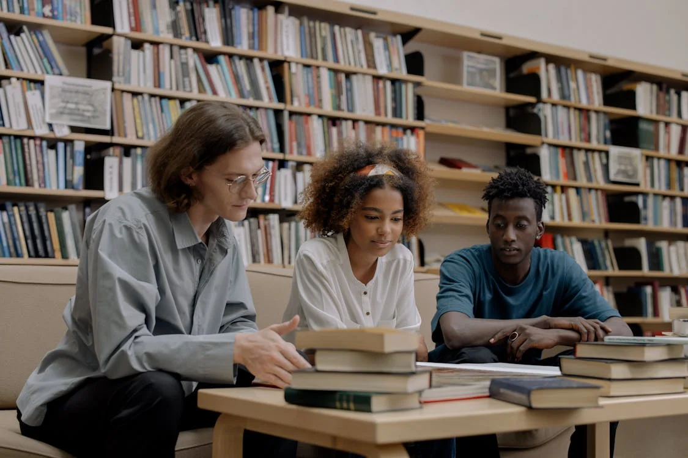

Libros
Ver másRevistas Académicas
Ver másTesis y Trabajos de Grado
Ver másNovedades

Nuevos materiales disponibles en biblioteca
15 mayo 2025Hemos incorporado más de 150 libros en las áreas de telecomunicaciones, informática y derecho. Puedes consultarlos directamente desde el sistema.
Leer más
Nuevos horarios para préstamo de materiales
29 Noviembre 2024Ahora puedes solicitar tus materiales hasta las 7:00 p.m. de lunes a viernes. Sábados disponibles de 8:00 a.m. a 12:00 m.
Leer más

Manual para nuevos usuarios
5 mayo 2025Si es tu primera vez usando el sistema, descarga nuestra guía paso a paso para conocer cómo hacer préstamos, reservas y renovaciones.
Leer más